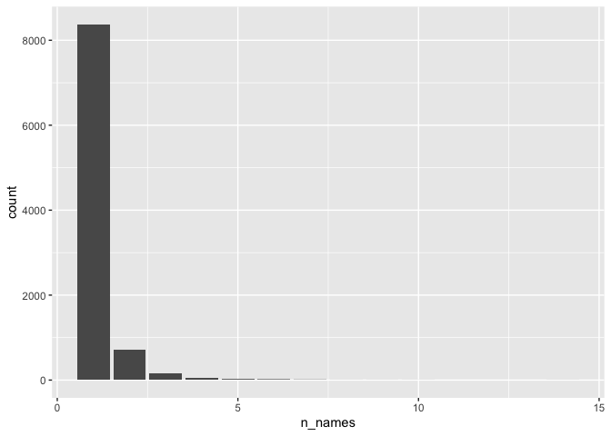
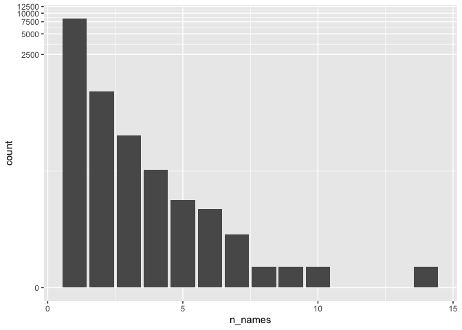

options(HTTPUserAgent = "your_name@some_email.com")Working with Form AP data
PCAOB
Form AP
R
DuckDB
Data curation
Keywords
PCAOB, Form AP, R, DuckDB, Data curation
This note was first shared on LinkedIn on 16 May 2024. This restored HTML version retains the original case study, with updated code and data-location instructions. The original PDF preserves the earlier output; counts below depend on the version of the PCAOB data used to run the code. The follow-up note, Missing Form APs?, compares Form AP filings with auditor information in SEC filings.
The United States Public Company Accounting Oversight Board (PCAOB) requires registered public accounting firms to file on Form AP for each audit report.1 Data from these filings are made available by the PCAOB as part of its AuditorSearch page. The PCAOB describes AuditorSearch as “a public database of engagement partners and audit firms participating in audits of U.S. public companies.”
These Form AP data recently featured in a tongue-in-cheek Financial Times article by George Steer that showed that the auditor Ben Borgers had used 14 different names—including the name “Ben F orgers”—on Form AP filings. The analysis of the Form AP data in the FT article had been conducted by independent researcher Stephen Walker and below I show how to reproduce Stephen’s analysis.
The purpose of this note is to demonstrate how one can work with Form AP data using R. Working with these data is a nice exercise for developing some basic data science skills. All the software needed to produce the analyses in this note is free and can be installed in less than ten minutes. So it should be easy to work through everything I do here.2 A fast-paced hands-on tutorial for R and some of the ideas here is provided in Chapter 2 of Empirical Research in Accounting: Tools and Methods here.3
In writing this note, I use the packages listed below.4 This note was written using Quarto and compiled with RStudio, an integrated development environment (IDE) for working with R. The source code for this note is available here.
Getting Form AP data
The Form AP data are made available by the PCAOB as a single compressed comma-separated value (CSV) file. Set the HTTPUserAgent option to include your email address when downloading data using a script, as in the R code below.5
The download script uses two environment variables: RAW_DATA_DIR for downloaded source files and DATA_DIR for processed Parquet files. If you already use these variables, keep your existing settings. Otherwise, choose directories on your computer, for example:
Sys.setenv(RAW_DATA_DIR = "~/research/raw_data",
DATA_DIR = "~/research/parquet")The script creates a pcaob subdirectory under each directory. It saves the original download as RAW_DATA_DIR/pcaob/FirmFilings.zip and the processed data as DATA_DIR/pcaob/form_aps.parquet. An existing ZIP is reused, so rerunning the script does not replace the raw download.
Once we have set HTTPUserAgent, we can run the script available here by executing the following line in R. This script takes about 10 seconds to run for me, but it may take longer if you have a slower connection to the PCAOB website than I do.
source("https://raw.githubusercontent.com/iangow/notes/main/get_form_aps.R")This script downloads and processes the Form AP data into a parquet file. The parquet format is described in R for Data Science (Wickham et al. 2023, 393) as “an open standards-based format widely used by big data systems.” Parquet files provide a format optimized for data analysis, with a rich type system. More details on the parquet format can be found in Chapter 22 of R for Data Science and a guide to creating a parquet data repository are provided here.
For reasons we will explain below, we use a DuckDB database connection to work with the data. We start by creating that connection and loading the parquet file we just created.
db <- dbConnect(duckdb::duckdb())
data_dir <- Sys.getenv("DATA_DIR")
if (!nzchar(data_dir)) stop("Set DATA_DIR before running this note.")
parquet_file <- file.path(path.expand(data_dir), "pcaob", "form_aps.parquet")
if (!file.exists(parquet_file)) {
stop("Run get_form_aps.R to create ", parquet_file)
}
form_aps <- tbl(db, sql(paste0("SELECT * FROM read_parquet(",
dbQuoteString(db, parquet_file), ")")))For the most part, the data in the Form AP file are straightforward. However, two sets of fields create more work than the others.
JSON data
The first set of fields in the Form AP data that require more effort are the three stored as JSON:
audit_fund_seriesaudit_not_divided_percent_informationaudit_divided_information
JSON stands for “Javascript object notation” and is a common form of data on the internet. For example, many web APIs return data in JSON form. More on JSON can be found in Chapter 23 of R for Data Science.
The script we used to create form_aps.parquet does not process the JSON data; these are retained as simple text data. However, we could easily process these columns if we wanted to do so. DuckDB also has functions for processing JSON values stored in table columns. Here I bring the data into R (using the collect() function) and use the parse_json() function from the jsonlite library to illustrate an alternative approach.
Here we illustrate one approach using the column audit_fund_series. We use rowwise() because parse_json() is designed to work with one value at a time and list() to allow multiple values to be stored in a single row. To understand what the unnest_longer() and unnest_wider() functions are doing, it may be helpful to examine the input to and output from those functions. This can be achieved by selecting and executing the code preceding the pipes (i.e., |>) before and after the respective functions. More about pipes can be found in Chapter 4 of R for Data Science.
fund_series <-
form_aps |>
select(form_filing_id, audit_fund_series) |>
filter(!is.na(audit_fund_series)) |>
collect() |>
rowwise() |>
mutate(json = list(parse_json(audit_fund_series))) |>
unnest_longer(json) |>
unnest_wider(json) |>
select(-audit_fund_series)In effect, we process the data in this column into a new table, fund_series. This fund_series table could be copied to DuckDB and joined with form_aps as needed.
fund_series# A tibble: 147,729 × 3
form_filing_id FundSeriesID FundName
<int> <chr> <chr>
1 27 S000000360 General Treasury Securities Money Market Fu…
2 27 S000000359 General Government Securities Money Market …
3 28 S000000118 GENERAL CALIFORNIA MUNICIPAL MONEY MARKET F…
4 29 S000000123 GENERAL NEW YORK AMT-FREE MUNICIPAL MONEY M…
5 32 S000000121 General Municipal Money Market Funds, Inc.
6 33 S000009025 Deutsche Municipal Income Trust
7 35 S000000093 DREYFUS NEW YORK AMT-FREE MUNICIPAL BOND FU…
8 37 S000006150 Deutsche Small Cap Value Fund
9 37 S000006149 Deutsche Mid Cap Value Fund
10 37 S000006144 Deutsche Large Cap Value Fund
# ℹ 147,719 more rowsDates and times
The second set of columns that requires careful handling are the five columns containing dates or date-times.
audit_report_date: Date of the audit report (mm/dd/yyyy)fiscal_period_end_date: The end date of the most recent period’s financial statements identified in the audit report (mm/dd/yyyy)signed_date: Date of typed and manual signatures (mm/dd/yyyy)audit_dual_date: The date of the dual-date information, if any.filing_date: Date and time that the Form AP was filed.
Some clean-up is required for the first three fields, as these are not always in the indicated mm/dd/yyyy format. The audit_dual_date field can contain multiple dates and requires special handling. Finally, filing_date contains both a date and a time and I process it accordingly. According to the PCAOB-provided data dictionary, “dates and times are provided based on the U.S. Eastern time zone” and I process these fields using that assumption.
The following code shows the most recent dates in the local data. These dates describe the downloaded snapshot; rerunning the analysis with a newer download will change the results.
form_aps |>
select(ends_with("date")) |>
select(-audit_dual_date) |>
summarize(across(everything(), \(x) max(x, na.rm = TRUE))) |>
collect()# A tibble: 1 × 4
audit_report_date fiscal_period_end_date signed_date filing_date
<date> <date> <date> <dttm>
1 2026-10-22 2026-10-22 2026-10-23 2026-10-23 21:55:52The anonymous function is needed to exclude missing values (NA in R). More on missing values is found in Chapter 18 of R for Data Science.
Note that the unnest() function is needed to analyse audit_dual_date, as audit_dual_date contains a list of dates. More on list-columns can be found in Chapter 23 of R for Data Science.
form_aps |>
select(audit_dual_date) |>
mutate(audit_dual_date = unnest(audit_dual_date)) |>
filter(!is.na(audit_dual_date)) |>
summarize(max = max(audit_dual_date, na.rm = TRUE)) |>
collect()# A tibble: 1 × 1
max
<date>
1 2026-10-09Partner names
We now combine the first, middle, and last names of each partner into a single name. This step is facilitated by our use of DuckDB, as missing values (e.g., cases where partners have no middle name) are quietly ignored.6
form_aps_names <-
form_aps |>
mutate(engagement_partner_name =
str_c(engagement_partner_first_name,
engagement_partner_middle_name,
engagement_partner_last_name, sep = " ")) |>
select(form_filing_id, engagement_partner_id, engagement_partner_name)Note that dplyr is quietly translating our code into SQL, as can be seen by applying show_query() to form_aps_names. Here str_c() is translated into the SQL function concat_ws() (see here for details). For display below, I abbreviate the configured data directory as DATA_DIR.
form_aps_names |>
show_query()<SQL>
SELECT form_filing_id, engagement_partner_id, CONCAT_WS(' ',
engagement_partner_first_name, engagement_partner_middle_name,
engagement_partner_last_name) AS engagement_partner_name FROM (SELECT * FROM
read_parquet('DATA_DIR/pcaob/form_aps.parquet')) AS q01SQL is a specialized language for manipulating and retrieving tabular data used by almost all modern database systems. More on SQL is provided in an appendix to Empirical Research in Accounting: Tools and Methods and in Chapter 21 of R for Data Science.
In Table 1, we show the number of different names associated with a sample of engagement partners. While we could provide a table the number of names associated with each value of engagement_partner_id, engagement_partner_id has no real meaning for readers. Instead, for each value of engagement_partner_id, we identify a unique name (the most frequent value of engagement_partner_name) that we use for this purpose and store this value in most_common_names.7
most_common_names <-
form_aps_names |>
count(engagement_partner_id, engagement_partner_name, name = "n_forms") |>
group_by(engagement_partner_id) |>
window_order(desc(n_forms)) |>
filter(row_number() == 1) |>
ungroup() |>
select(engagement_partner_id, engagement_partner_name)We count the number of unique names for each engagement_partner_id using n_distinct() and then merge the result with most_common_names to create the data frame names_df that we can use to produce tables and figures.
names_df <-
form_aps_names |>
group_by(engagement_partner_id) |>
summarize(n_names = n_distinct(engagement_partner_name)) |>
inner_join(most_common_names, by = "engagement_partner_id") We first produce Table 1, where we can already see that Ben F Borgers is an outlier.
names_df |>
filter(n_names >= 6) |>
select(engagement_partner_name, n_names) |>
arrange(desc(n_names)) | engagement_partner_name | n_names |
|---|---|
| Ben F Borgers | 14 |
| Olayinka Temitope Oyebola | 10 |
| MICHAEL PATRICK GILLESPIE | 9 |
| Thomas Michael O’Neal | 8 |
| Patrick Wong | 7 |
| kian kok wong | 7 |
| Mei-Yao Lin-Lin | 7 |
| Yong Yun Lee | 7 |
| Corey Eric Fischer | 7 |
| Sundra Zhao | 6 |
| SUGANTHAMALA NAVARATNAM | 6 |
| MARLENE HUTCHESON | 6 |
| MANNY TZAGARAKIS | 6 |
| Kristofer Heaton | 6 |
| Eleni - Analia Kokkori | 6 |
| SAU JONG LIM | 6 |
| SURINDER BANSAL | 6 |
| Madhava Rao Suryanarayana Rao Mankal | 6 |
| Derek Webb | 6 |
| David Ritzert | 6 |
| Richard J Fleischman | 6 |
| Jaslyn Huynh | 6 |
We next examine the various names under which Ben F Borgers has filed in Table 2. To be fair to “Ben F orgers”, the vast majority of filings by Ben F Borgers use the name “Ben F Borgers” and most of the rest use the name “Ben Borgers”.
form_aps_names |>
filter(engagement_partner_id == "504100001") |>
count(engagement_partner_name) |>
mutate(perc = round(n / sum(n, na.rm = TRUE) * 100, 2)) |>
arrange(desc(n))| engagement_partner_name | n | perc |
|---|---|---|
| Ben F Borgers | 864 | 91.82 |
| Ben Borgers | 61 | 6.48 |
| Benjamin Borgers | 3 | 0.32 |
| Ben F Borger | 2 | 0.21 |
| Borgers F Ben | 2 | 0.21 |
| Borgers Ben | 1 | 0.11 |
| Ben F Brogers | 1 | 0.11 |
| Ben F Brgers | 1 | 0.11 |
| Borges F Ben | 1 | 0.11 |
| Ben F orgers | 1 | 0.11 |
| Blake F Borgers | 1 | 0.11 |
| Ben f Borgers | 1 | 0.11 |
| Ben F Vonesh | 1 | 0.11 |
| Ben Borges | 1 | 0.11 |
I next produce Figure 1, which is almost identical to the plot in the FT article cited above.

A weakness of Figure 1 is that it is difficult to discern any information for values of n_names greater than 5. One approach to address this is to use a log-transformation. Figure 2 depicts the result of transforming the \(y\)-axis using \(log(1 + y)\).

Busy auditors
One possible red flag with the case of Ben F Borgers is the sheer number of audit engagements he has been involved in. Is Borgers an outlier in this regard too?
form_aps |>
group_by(engagement_partner_id) |>
summarize(n_audits = n(), .groups = "drop") |>
inner_join(most_common_names, by = "engagement_partner_id") |>
arrange(desc(n_audits)) |>
select(engagement_partner_name, n_audits) |>
collect(n = 10)| engagement_partner_name | n_audits |
|---|---|
| Daniel Timothy Rooney | 2738 |
| Yossi Daniel Jayinski | 1698 |
| Lawrence Raymond Depp | 1545 |
| Shivashankari Sivakumaran | 1406 |
| Paul Michael Gallagher | 1398 |
| Joseph D’Introno | 1278 |
| Amy Jo Huber | 1165 |
| Robert Allen Achtstatter | 1111 |
| Frank Michael Mleko | 991 |
| Kristine Marie Obrecht | 987 |
In the original analysis, Borgers barely cracked the top ten. The ranking changes as more filings become available; Table 3 shows the result for the local snapshot. What’s going on here?
In Table 4, I add information about the value of audit_report_type. It turns out that the “top auditors” are generally auditing investment companies. It seems plausible that such audits are quite perfunctory and a single engagement covers many companies (e.g., audits of ETFs or mutual funds).
form_aps |>
mutate(audit_report_type = str_replace(audit_report_type, ",.*$", "")) |>
group_by(engagement_partner_id, audit_report_type) |>
summarize(n_audits = n(), .groups = "drop") |>
inner_join(most_common_names, by = "engagement_partner_id") |>
arrange(desc(n_audits)) |>
select(engagement_partner_name, audit_report_type, n_audits) |>
collect(n = 10)| engagement_partner_name | audit_report_type | n_audits |
|---|---|---|
| Daniel Timothy Rooney | Investment Company | 2738 |
| Yossi Daniel Jayinski | Investment Company | 1698 |
| Lawrence Raymond Depp | Investment Company | 1545 |
| Shivashankari Sivakumaran | Investment Company | 1406 |
| Paul Michael Gallagher | Investment Company | 1396 |
| Joseph D’Introno | Investment Company | 1266 |
| Amy Jo Huber | Investment Company | 1165 |
| Robert Allen Achtstatter | Investment Company | 1106 |
| Kristine Marie Obrecht | Investment Company | 981 |
| Frank Michael Mleko | Investment Company | 979 |
So, in Table 5, I exclude audits of investment companies and there it can be seen that Borgers is once again an outlier.
form_aps |>
mutate(audit_report_type = str_replace(audit_report_type, ",.*$", ""),
firm_name = str_replace(firm_name, ",.*$", "")) |>
filter(audit_report_type != "Investment Company") |>
group_by(engagement_partner_id, firm_name, audit_report_type) |>
summarize(n_audits = n(), .groups = "drop") |>
inner_join(most_common_names, by = "engagement_partner_id") |>
arrange(desc(n_audits)) |>
select(engagement_partner_name, firm_name, audit_report_type, n_audits) |>
collect(n = 10)| engagement_partner_name | firm_name | audit_report_type | n_audits |
|---|---|---|---|
| Ben F Borgers | B F Borgers CPA PC | Issuer | 941 |
| Edward Francis Hackert | Marcum LLP | Issuer | 506 |
| Steven Vertucci | MaloneBailey | Issuer | 456 |
| Carl John Scheuten | WithumSmith+Brown | Issuer | 378 |
| Michael Bruce Tenny | WithumSmith+Brown | Issuer | 373 |
| Mark John Deters | WithumSmith+Brown | Issuer | 358 |
| Natalie Verbanac | Marcum LLP | Issuer | 351 |
| Jay Christopher Shepulski | WithumSmith+Brown | Issuer | 298 |
| Marc Howard Silverman | WithumSmith+Brown | Issuer | 292 |
| Patrick Wong | WWC | Issuer | 260 |
Trump Media’s new auditor
According to the Wall Street Journal, Semple, Marchal & Cooper was appointed as the new financial auditor for Trump Media & Technology Group early in May 2024.
We can search form_aps to identify the firm_id for this new audit firm.
djt_new_auditor <-
form_aps |>
filter(str_detect(firm_name, "^Semple")) |>
distinct(firm_id, firm_name)
djt_new_auditor |>
collect()# A tibble: 1 × 2
firm_id firm_name
<int> <chr>
1 178 Semple, Marchal & Cooper, LLPTable 6 suggests that Semple, Marchal & Cooper, LLP, has a much more manageable client roster than Ben F Borgers had.
form_aps |>
semi_join(djt_new_auditor, join_by(firm_id, firm_name)) |>
mutate(fiscal_year = year(fiscal_period_end_date)) |>
group_by(issuer_name) |>
summarize(n_audits = n(),
first_year = min(fiscal_year, na.rm = TRUE),
last_year = max(fiscal_year, na.rm = TRUE)) |>
arrange(desc(last_year), desc(n_audits)) |>
collect()| issuer_name | n_audits | first_year | last_year |
|---|---|---|---|
| Earth Science Tech, Inc. | 1 | 2026 | 2026 |
| Quest Resource Holding Corp. | 7 | 2019 | 2025 |
| Trump Media & Technology Group Corp. | 3 | 2023 | 2025 |
| CISO Global, Inc. | 3 | 2023 | 2025 |
| Cerberus Cyber Sentinel Corp. | 5 | 2018 | 2022 |
| RVeloCITY, Inc. | 2 | 2021 | 2022 |
| Adamas One Corp. | 2 | 2021 | 2022 |
| Snoogoo Corp. | 2 | 2016 | 2021 |
| Item 9 Labs Corp. | 2 | 2019 | 2020 |
| Adamas One Corp | 1 | 2020 | 2020 |
| Quest Resource Holding Corp | 3 | 2016 | 2018 |
| Abtech Holdings, Inc. | 2 | 2016 | 2017 |
| El Capitan Precious Metals, Inc. | 1 | 2017 | 2017 |
| Modern Round Entertainment Corporation | 1 | 2016 | 2016 |
Having completed our analysis, we can disconnect from our in-memory DuckDB database.
dbDisconnect(db)References
Gow, Ian D., and Stuart S. Kells. 2018. The Big Four: The Curious Past and Perilous Future of the Global Accounting Monopoly. Berrett-Koehler Publishers. https://books.google.com/books?id=VuReDwAAQBAJ.
Wickham, Hadley, Mine Çetinkaya-Rundel, and Garrett Grolemund. 2023. R for Data Science. O’Reilly Media. https://books.google.com/books?id=TiLEEAAAQBAJ.
Footnotes
Discussion of the history of the PCAOB is provided by Gow and Kells (2018).↩︎
An internet connection is required to download the data and software.↩︎
Empirical Research in Accounting: Tools and Methods was published in print form by CRC Press in 2024 and remains free online.↩︎
Execute
install.packages(c("tidyverse", "DBI", "dbplyr", "duckdb", "jsonlite", "arrow"))within R to install all the packages you need to run the code in this note.↩︎Use your actual email address here.↩︎
If we working with
dplyrand native data frames, missing values would be “infectious” withstr_c(). Such infectiousness is often the desired behaviour, but in this case, we want to quietly discard missing components of names. That is we wantstr_c("Ian", NA, "Gow")to be"Ian Gow"rather than theNAit would be if we usedstr_c()with native R data. More on missing values can be found in Chapter 18 of R for Data Science.↩︎We use
group_by(engagement_partner_id)thenwindow_order(desc(n_forms))to organize the data in descending order of the frequency a name appears for a givenengagement_partner_idand thenfilter(row_number() == 1)to pick off the first row for each value ofengagement_partner_id.↩︎